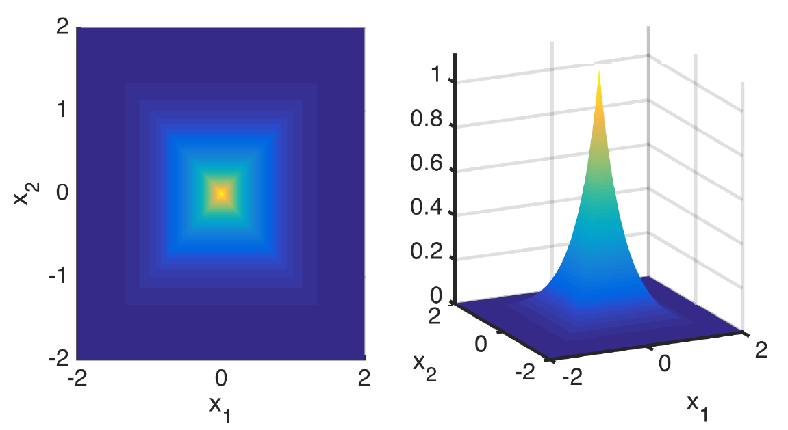

Bayesian anti-sparse coding
Sparse representations have proven their efficiency in solving a wide class of inverse problems encountered in signal and image processing. Conversely, enforcing the information to be spread uniformly over representation coefficients exhibits relevant properties in various applications such as digital communications. Anti-sparse regularization can be naturally expressed through an l_\inf-norm penalty. This work derives a probabilistic formulation of such representations. A new probability distribution, referred to as the democratic prior, is first introduced. Its main properties as well as three random variate generators for this distribution are derived. Then this probability distribution is used as a prior to promote anti-sparsity in a Gaussian linear inverse problem, yielding a fully Bayesian formulation of anti-sparse coding. Two Markov chain Monte Carlo (MCMC) algorithms are proposed to generate samples according to the posterior distribution. The first one is a standard Gibbs sampler. The second one uses Metropolis-Hastings moves that exploit the proximity mapping of the log-posterior distribution. These samples are used to approximate maximum a posteriori and minimum mean square error estimators of both parameters and hyperparameters. Simulations on synthetic data illustrate the performances of the two proposed samplers, for both complete and over-complete dictionaries. All results are compared to the recent deterministic variational FITRA algorithm.

Fig. 1. The democratic pdf.
The democratic distribution and the Bayesian anti-sparse coding algorithm are detailed in the paper published in IEEE Trans. Signal Processing:
- article
 .
.
Complementary results are available in the following technical report.
- report
 .
.
The corresponding Matlab codes are available on Clément Elvira's GitHub.
- matlab codes
 .
.